graph LR A["arara ü¶ú"] ==> B(pdflatex) B --> C[PDF document]
Impaginazione (tesi) con LaTeX
In collaborazione con FabLab UniTrento
Aggiornate giovedì 31 ottobre 2024
Introduzione
Pronuncia
\(\rm\LaTeX\) si pronuncia /ˈlɑːtɛx/ or /ˈleɪtɛx/, e non /ˈleɪtɛks/ o /ˈleɪˌtɛks/ (IPA symbols).

Installazione
Installeremo un sistema TeX locale completamente funzionante, esistono diverse scelte multipiattaforma fra le quali MiKTeX, MacTeX, or TeX Live
Per questo corso useremo TeX Live, un sistema TeX completo e cross-platform.
Importante
Agli utilizzatori di Mac, per favore, utilizzate questa installazione, in questo modo abbiamo tutti la stessa versione installata localmente, di seguito troverete istruzioni dettagliate.
Requisiti

Per seguire questo corso è necessario avere installati sulla propria macchina:
- Visual Studio Code + LaTeX Workshop plugin:
- un’installazione parziale di TeX Live;
- Java (per poter usare arara ü¶ú);
- Python + la libreria
pygmetize(perminted); - Git (per il versionamento del documento).
Installazione dei requisiti su Windows
- installare Visual Studio Code (download page);
cercare “LaTeX Workshop” nella sezione “Extensions” e installare l’estensione, oppure da terminale:
- installare Java (download page);
- installare Python (download page) (installazione guidata):
eseguire
pip install Pygmentssu un terminale:
- installare (download page) (installazione guidata);
- installare Tex-Live per Windows (download diretto ~20MB) (installazione guidata).
Procedura installazione Python
- apri il file eseguibile
python-<versione>-<cpu>.exe
- premere “Add
python.exeto PATH”
Avviso
Se ci si dimentica di aggiungere python.exe al PATH, pip non sarà visibile da riga di comando.
Installare solo pip
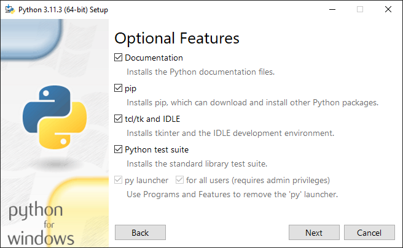
pip (before deselezione)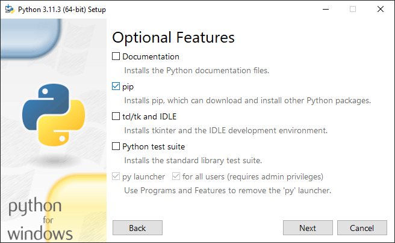
pip (after deselezione)Avviso
Possiamo evitare di installare altri programmi che non ci servono.
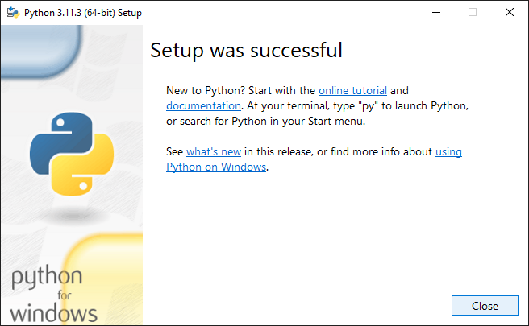
Risoluzione problemi
Se cercando di invocare pip all’interno della Powershell:
pip : The term 'pip' is not recognized as the name of a cmdlet, function, script file, or operable program. Check the
spelling of the name, or if a path was included, verify that the path is correct and try again.
At line:1 char:1
+ pip
+ ~~~
+ CategoryInfo : ObjectNotFound: (pip:String) [], CommandNotFoundException
+ FullyQualifiedErrorId : CommandNotFoundExceptionOppure all’interno di un Command Prompt:
- cliccare il menù start e cercare “environment variables”.
- bisogna controllare che esistano ed eventualmente aggiungere questi due percorsi al
PATHdell’utente:
Environment Variables
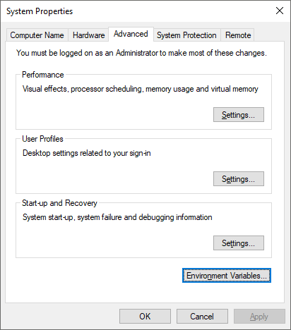
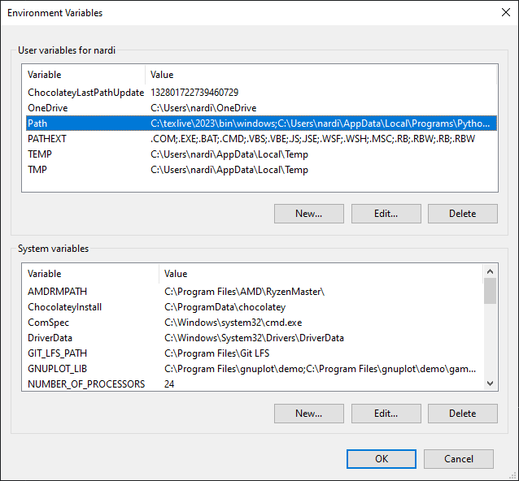
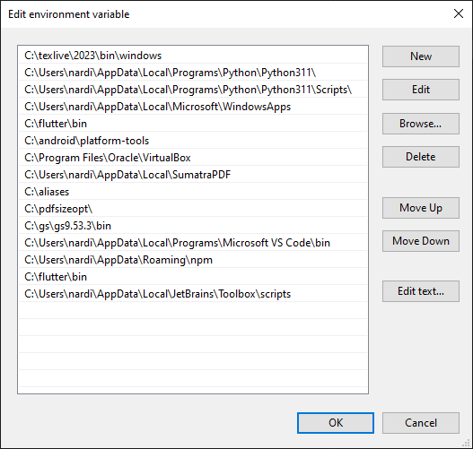
Procedura installazione git
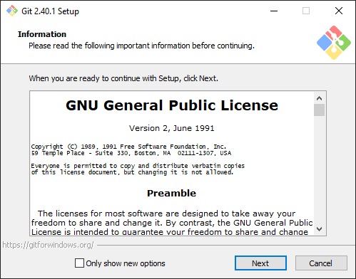
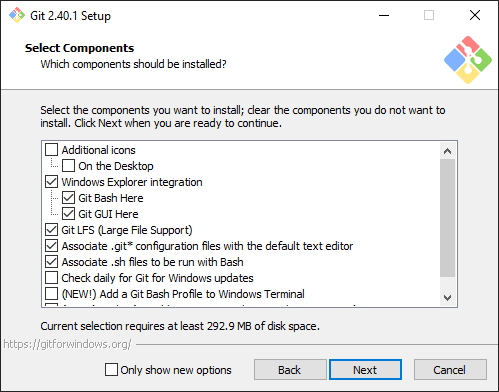
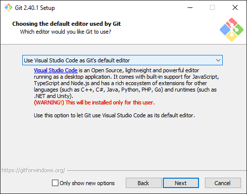
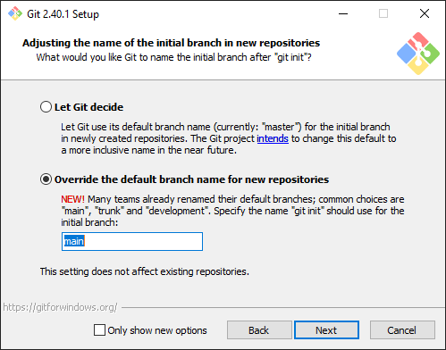
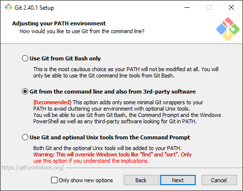
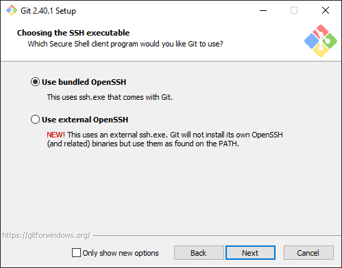
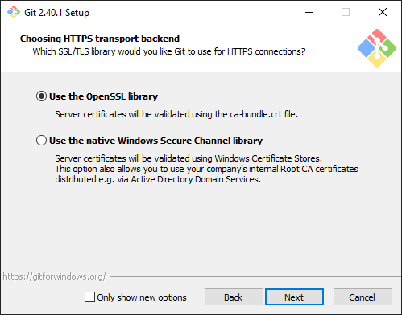
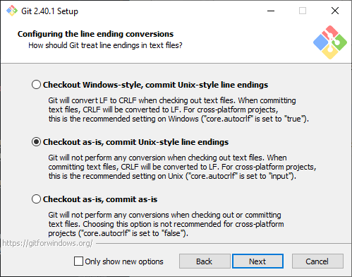
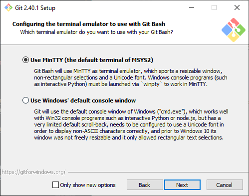
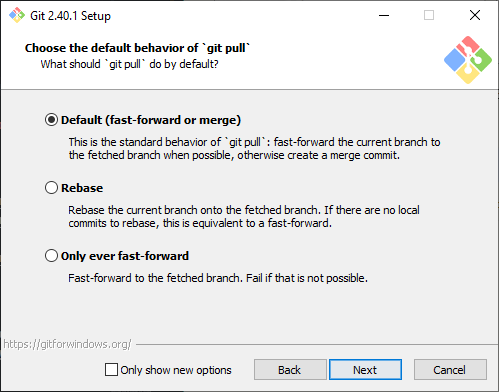
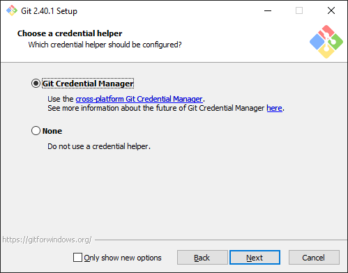
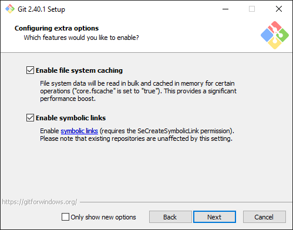
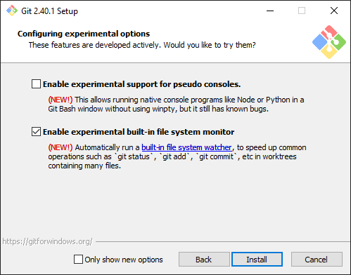
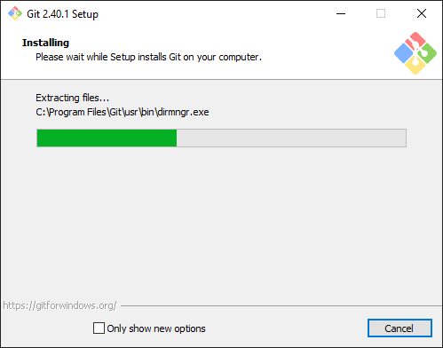
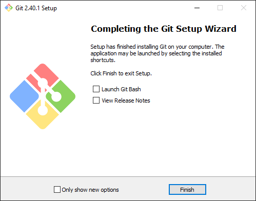
Procedura installazione TeX-Live
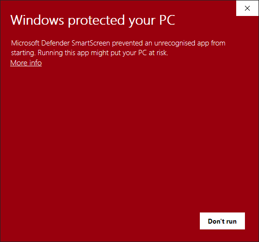
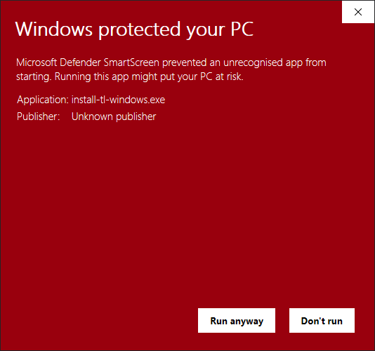
- premere “Maggiori Informazioni”/“More info”;
- premere “Esegui comunque”/“Run anyway”;
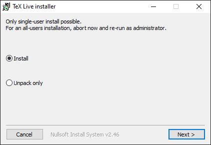
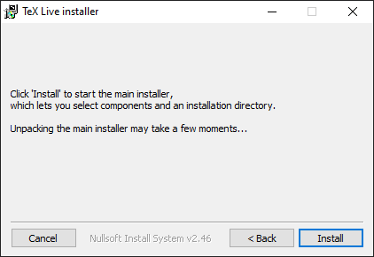
- premere “Next”;
- premere “Install”;
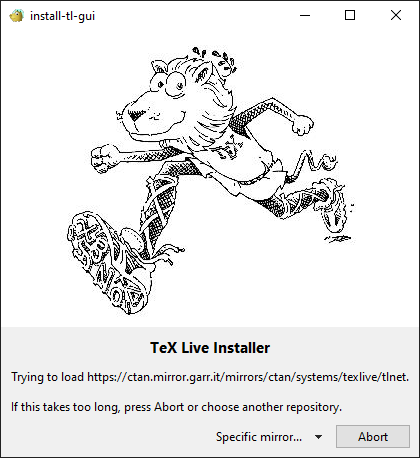
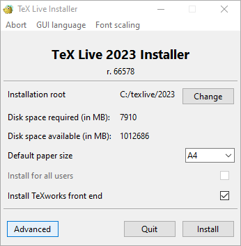
- si aprirà automaticamente una finestra che si chiuderà poco dopo;
- premere “Avanzate”/“Advanced”;
7. Advanced UI (before selection)
- clicca su Personalizza/Customize
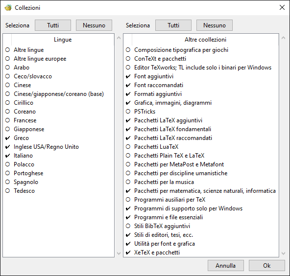
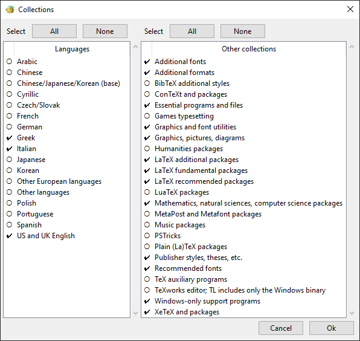
- selezionare i pacchetti in figura;

9. Advanced UI (after selection)
- deselezionare:
- Install font/macro doc tree
- Install font/macro source tree
- Install TeXworks front end
Ora dovreste notare che lo spazio richiesto è appena sotto i 3GB, dopodiché premere “Install” in basso a destra;
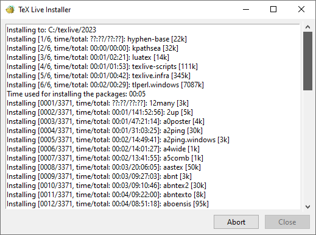
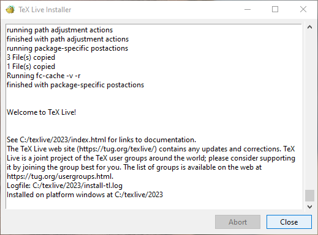
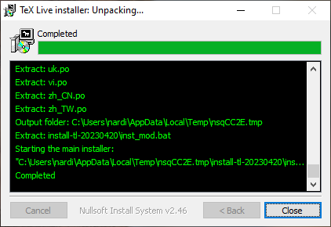
Avviso
Non mettere in sospensione il computer durante l’installazione, la procedura durerà circa 20 minuti.
Installazione dei requisiti su Linux/Mac
(solo per utenti Mac) installare il gestore di pacchetti
Brewewget;installare Visual Studio Code:
sudo snap install --classic codebrew install --cask visual-studio-codeinstallare Java (è necessario solo il Java Runtime Environment):
sudo apt install -y default-jrebrew install javainstallare Pygments:
sudo apt install -y python3-pygmentsbrew install python@3.11 && brew install pygments- controlla che sia stato installato correttamente:
pygmentize -Vaggiornare (preinstallato):
sudo apt upgrade gitbrew install git && brew upgrade gitinstallare Tex-Live per sistemi Unix (installazione guidata).
Procedura installazione TeX-Live
Crea una cartella nella quale installerai la nuova distribuzione TexLive e dai al tuo utente la proprietà di lettura e scritrura di questa cartella:
Scarica e installa manualmente TexLive:
mkdir /tmp/texlive
cd /tmp/texlive
wget http://mirror.ctan.org/systems/texlive/tlnet/install-tl.zip
unzip ./install-tl.zip -d install-tl
cd install-tl/install-tl-$(date +%Y%m%d)
perl ./install-tlDi seguito troverai le impostazioni da selezionare durante l’installazione.
Consiglio
Puoi ingrandire le immagini cliccandoci sopra tenendo premuto alt.
Avere i permessi di scrittura
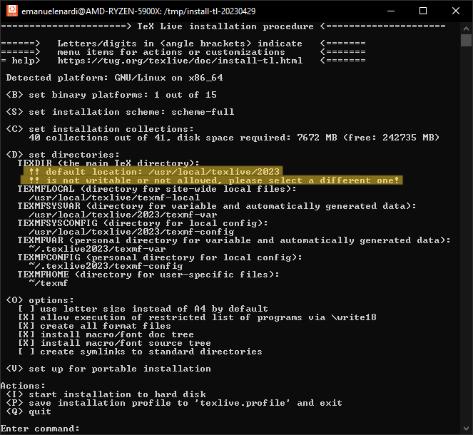
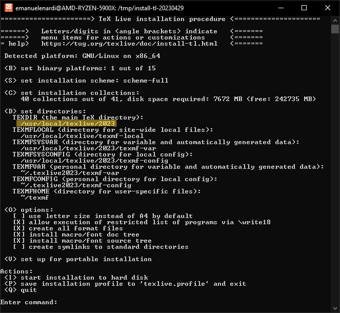
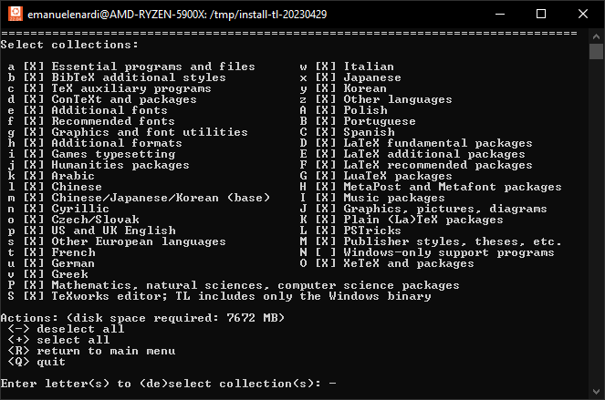
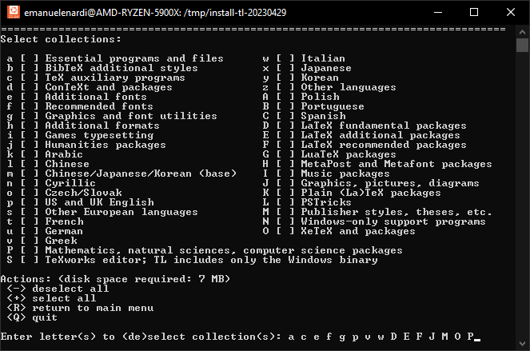
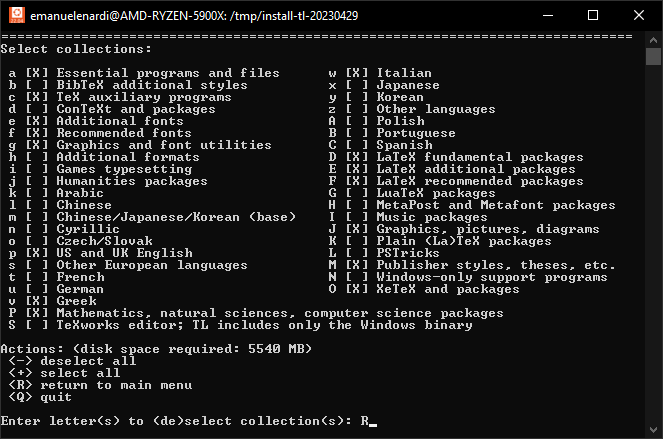
- installare le 15 collezioni in figura che corrispondono alle lettere (copia e incolla il codice sul terminale):
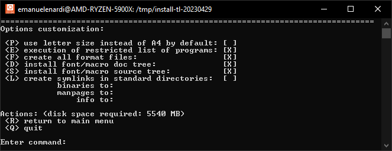 
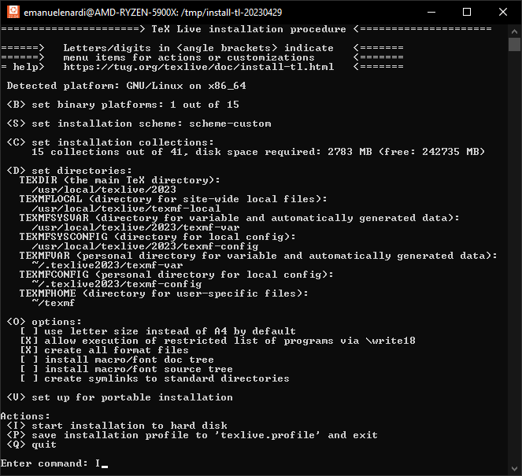
All’interno della cartella d’installazione dovrebbe essere stato creato un file texlive.profile e il suo contenuto dovrebbe corrispondere a questo:
selected_scheme scheme-custom
TEXDIR /usr/local/texlive/2023
TEXMFCONFIG ~/.texlive2023/texmf-config
TEXMFHOME ~/texmf
TEXMFLOCAL /usr/local/texlive/texmf-local
TEXMFSYSCONFIG /usr/local/texlive/2023/texmf-config
TEXMFSYSVAR /usr/local/texlive/2023/texmf-var
TEXMFVAR ~/.texlive2023/texmf-var
binary_x86_64-linux 1
collection-basic 1
collection-binextra 1
collection-fontsextra 1
collection-fontsrecommended 1
collection-fontutils 1
collection-langenglish 1
collection-langgreek 1
collection-langitalian 1
collection-latex 1
collection-latexextra 1
collection-latexrecommended 1
collection-mathscience 1
collection-pictures 1
collection-publishers 1
collection-xetex 1
instopt_adjustpath 0
instopt_adjustrepo 1
instopt_letter 0
instopt_portable 0
instopt_write18_restricted 1 # allow exection of restricted list of programs via \write18
tlpdbopt_autobackup 1
tlpdbopt_backupdir tlpkg/backups
tlpdbopt_create_formats 1
tlpdbopt_desktop_integration 1
tlpdbopt_file_assocs 1
tlpdbopt_generate_updmap 0
tlpdbopt_install_docfiles 0 # Install font/macro doc tree
tlpdbopt_install_srcfiles 0 # Install font/macro source tree
tlpdbopt_post_code 1
tlpdbopt_sys_bin /usr/local/bin
tlpdbopt_sys_info /usr/local/share/info
tlpdbopt_sys_man /usr/local/share/man
tlpdbopt_w32_multi_user 1Alla prossima installazione puoi utilizzare questo file, modificandolo in modo appropriato, per effettuare l’installazione di TeX Live:
Post-installazione: impostazione PATH
Alla fine dell’installazione vengono stampati i seguenti messaggi:
Add /usr/local/texlive/2023/texmf-dist/doc/man to MANPATH.
Add /usr/local/texlive/2023/texmf-dist/doc/info to INFOPATH.
Most importantly, add /usr/local/texlive/2023/bin/x86_64-linux
to your PATH for current and future sessions.Ora devi aggiungere la directory dei binari di TeX Live al tuo PATH:
echo 'export MANPATH="$MANPATH:/usr/local/texlive/2023/texmf-dist/doc/man"' >> ~/.bashrc
echo 'export INFOPATH="$INFOPATH:/usr/local/texlive/2023/texmf-dist/doc/info"' >> ~/.bashrc
echo 'export PATH=/usr/local/texlive/2023/bin/x86_64-linux:$PATH' >> ~/.bashrc
source ~/.bashrc # aggiorna il file di configurazione Puoi eseguire il codice soprastante nel tuo file ~/.bashrc per aggiornare il path, ma ricordati di cambiare l’anno.
Alcuni utenti Linux e Mac preferiscono utilizzare zsh come bash shell (da macOS Catalina, Ottobre 2019, è quella di default), in questo caso bisogna aggiornare il file ~/.zshenv, in particolare su Mac bisogna cambiare una cartella:
echo 'export MANPATH="$MANPATH:/usr/local/texlive/2023/texmf-dist/doc/man"' >> ~/.zshenv
echo 'export INFOPATH="$INFOPATH:/usr/local/texlive/2023/texmf-dist/doc/info"' >> ~/.zshenv
echo 'export PATH=/usr/local/texlive/2023/bin/universal-darwin:$PATH' >> ~/.zshenv
source ~/.zshenv # aggiorna il file di configurazioneControlla che il PATH si sia aggiornato:
Nel caso in cui l’installazione non sia andata a buon fine, resetta l’installazione.
Se tutto è corretto, non dimenticare di rimuovere la cartella di installazione:
Controllo dell’installazione
Per accertarti che l’installazione sia andata a buon fine:
Controllo dell’installazione
Produrre un semplice documento:
\[ \rm Hello\ \LaTeX! \] Ciclo di build:
Manutenzione installazione
Aggiornare tlmgr stesso:
tlmgr update --self
Listare i pacchetti che possono essere aggiornati:
tlmgr update --list
Aggiornare un pacchetto specifico:
tlmgr update <pkgname>
Aggiornare tutti i pacchetti:
tlmgr update --all
Aggiornare sia tlmgr che tutti i pacchetti:
tlmgr update --self --all
Documentazione
possiamo consultare direttamente il sito texdoc.org
oppure andare su ctan.org
impostazine shortcut search engine su Chrome
Ottimizzare il flusso di lavoro su Visual Studio Code
Personalizzazione dell’ambiente di lavoro:
View > Open View... > TimelineView > Appereance > MinimapView > Sticky ScrollSnippets: Configure User SnippetsPreferences: Open Keyboard Shortcutslatex-workshop.latex.recipes(see my recipes)latex-workshop.latex.autoBuild.run
My Keyboard Shortcuts
// Place your key bindings in this file to override the defaults
[
{
"key": "ctrl+shift+B",
"command": "editor.action.insertSnippet",
"when": "editorLangId == latex && editorTextFocus",
"args": {
"snippet": "\\textbf{${TM_SELECTED_TEXT}$0}"
}
},
{
"key": "ctrl+shift+I",
"command": "editor.action.insertSnippet",
"when": "editorLangId == latex && editorTextFocus",
"args": {
"snippet": "\\emph{${TM_SELECTED_TEXT}$0}"
}
}
]Perché la tipografia è importante?
Oscars 2017 Best Picture announcement
By Design – Vox
File prodotti da LaTeX
Prima di tutto, è importante capire quali sono i file prodotti da \(\rm\LaTeX\) quando compiliamo un documento.
acnacrauxbatbblbbxbcfbibblgbrfbstcfgclschktexrcdtxdvi
encepsfdfdb_latexmkflsfmtgitattributesgitignoreglggloglsidxilgindinsjpg
latexmkrclocloelofloglollotltxmfmdotfnavnlgnlonlsout
pdfpngpspygpygtexrun.xmlshsnmstysynctextextocttfvrbyml
file sorgente:
texdtxclsltxcfginssty
immagini:
epsjpgpng
font:
encfdmfotfttf
beamer:
navsnmvrb
bibliografia:
bblbbxbcfbibblgbrfbst
glossario:
glsgloglg
indice:
indidx
acronimi:
acnacrilg
nomenclatura:
nlgnlonls
contenuti:
locloeloflollottoc
configurazione:
chktexrclatexmkrcgitattributesgitignoreyml
documentazione:
md
scripting:
batsh
precompilazione:
fmt
caching:
_minted*/fdb_latexmkpygpygtexrun.xml
sincronizzazione:
synctexfls
prodotti:
auxoutlogdvipspdf
- dobbiamo evitare esecuzioni successive inutili.
- abbiamo a disposizione tre funzioni fondamentali:
missing,changedefound. - tramite le quali possiamo controllare la presenza di un file, la sua modifica, o la presenza di una parola chiave all’interno del file.
- due file di configurazione possibili:
.araraconfig.yaml,.arararc.yaml
% arara: pdflatex: { draft: yes, shell: yes, options: [--output-directory=build] }
% arara: biber: { options: [ '--output-directory=build' ] }
% arara: --> if missing(toFile('build/thesis.bbl')) || changed(toFile('build/thesis.bbl')) || found(toFile('build/thesis.log'), 'Citation')
% arara: makeglossaries: { options: [ '-d', 'build' ] }
% arara: --> if changed (toFile('build/thesis.glo')) || missing (toFile('build/thesis.gls'))
% arara: pdflatex: { shell: yes, synctex: yes, options: [--output-directory=build] }
% arara: move: { files: [ 'build/thesis.pdf' ],
% arara: --> target: 'backup/thesis.pdf' }Pulizia file temporanei
Pulire i file temporanei:
Se latexmk -c si rifiuta di rimuovere determinati file, è possibile specificare le loro estensioni nel file di configurazione .latexmkrc come segue:
Questo non elimina il documento finale .pdf. Se vuoi eliminare anche il .pdf:
Questo è il contenuto del mio file di configurazione .latexmkrc:
# latexmk -pdf -pvc main.tex
$pdflatex = "pdflatex --shell-escape -synctex=1 -halt-on-error %O %S";
$sleep_time = 1; # 1 second
$pdf_mode = 1; # tex -> pdf
# If you have your work split up into several parts, you have to specify the main file like this:
@default_files = ('thesis.tex');
# And finally, if latexmk -c refuses to remove certain files, you can specify their extensions and next time they’ll be gone:
$clean_ext = "acn acr alg glg glo gls ist log nav out run.xml slg snm syg syi synctex.gz";
# https://tex.stackexchange.com/questions/83341/clean-bbl-files-with-latexmk-c
$bibtex_use = 2;
$out_dir = 'build';Package utili
Package utili
adjustboxalgorithms2eamsfontsamsmathamssymbannotate-equationsanyfontsizeappendixarraybabelbiblatex
bookmarkbooktabscaptioncleverefcsquotesdatetime2diagboxdoclicensedraftwatermarkempheqemptypageenumitemepigraph
fancyhdrfloatfontspecforestgeometrygraphicxhyperrefindexlistingsmakecellmathtoolsmicrotype
mintedmultirownamerefnicefracpagesltsparskippolyglossiaragged2esetspacesilencesiunitx
standalonesubcaptiontabularxtcolorboxthmtoolstikztitlesectitletocverbatimxcolorxparse
Package da non caricare
tabu→ […tabularray]cite→biblatex- [
subfigure,subfig] →subcaption glossary→glossaries- [
epsf,epsfig,psfig] →graphicx enumerate→enumitem
Scaletta argomenti
Scaletta argomenti [1/2]
- clean code mentality
- codifica dell’input e del font (
inputencefontenc) - impostazione della lingua del documento (
babel) - hyphenation, typesetting, ligatures (
microtype)1 - le virgolette (
csquotes) - margini del documento (
geometry), indentazione (parskip) - Interruzioni di riga2,uso di
%3,commentpackage - grassetto, corsivo,
monofont, combinazini - elenchi puntati, numerati, descrittivi, personalizzati (
enumitem) - note a piè di pagina (
footnote)
Scaletta argomenti [2/2]
- testatina e piedino (
fancyhdr) - figure (
graphicx) e tabelle (booktabs), opzioni comuni - strutturazione del documento (
standalone) - riferimenti ipertestuali (
hyperref) - importazione di codice, evidenziazione della sintassi (
minted) - scrittura di pseudocodice (
algorithms2e) - creazione di un glossario (
glossaries), acronimi (acronym), indice (index)
Struttura del progetto
.
├── assets/
│ ├── assets/
│ │ ├── resources/
│ │ │ └── bibliography.bib
│ │ ├── figures/
│ │ ├── plots/
│ │ └── tables/
│ ├── backup/
│ ├── build/
│ ├── chapter/
│ │ ├── intro/
│ │ │ ├── frontespizio.tex
│ │ │ ├── dedica.tex
│ │ └── *-chapter.tex
│ └── libraries/
| ├── algorithm2e.sty
| ├── bibliography.sty
| ├── code.sty
| ├── color.sty
| ├── geometry.sty
| ├── glossaries.sty
| ├── graphics.sty
| ├── links.sty
| ├── lists.sty
| ├── macros.sty
| ├── math.sty
| ├── propertiesaggiun.sty
| ├── spacing.sty
| └── tikz.sty
├── .latexmkrc
├── presentation.preamble.sty
├── presentation.tex
├── thesis.preamble.sty
└── thesis.texScrivere codice
Importare il pacchetto minted
Il pacchetto minted contenuto nella collezione collection-mathscience ci permette di importare codice da file esterni e, grazie a python e a pygmentize, di evidenziarne la sintassi. Importiamo il pacchetto in libraries/set-code.sty:
Nel testo possiamo scrivere codice direttamente tramite il nuovo ambiente minted:
\begin{minted}{java}
public class HelloWorld {
public static void main(String[] args) {
System.out.println("Hello, World!");
}
}
\end{minted}Ipotizziamo di aver estrapolato il contenuto in un file esterno assets/codes/main.java, ora è sufficiente importare il file:
All’interno del testo possiamo scrivere codice “in linea”:
Opzioni utili per il pacchetto minted
\usemintedstyle{manni}
\setminted{
breaklines = true, breakanywhere,
breakaftersymbolpre = \raisebox{0ex}[0ex][0ex]{\ensuremath{\rhookswarrow}},
breakaftersymbolpost = \raisebox{0ex}[0ex][0ex]{\ensuremath{\rcurvearrowse}\space},
frame = lines,
fontsize = \small, fontseries = bold,
linenos = true, numberblanklines = false,
texcomments, mathescape,
obeytabs, tabsize = 4,
autogobble % remove all common leading whitespace from code
}
\newmintinline[cppinline]{cpp}{}
\newmint[cppcode]{cpp}{}
\newmintedfile[cppfile]{cpp}{}
\newmintinline[javainline]{cpp}{}
\newmint[javacode]{cpp}{}
\newmintedfile[javafile]{cpp}{}Come aggiungere una didascalia
modifichiamo il preambolo:
aggiungiamo delle opzioni:
ora nel testo possiamo creare un ambiente fluttuante:
- possiamo aggiungere
\listoflistingsnel punto in cui vogliamo che venga generato l’elenco dei codici, generalmente dopo\listoffigurese\listoftables.
Per ulteriori personalizzazioni, consultare la documentazione.
Appendice
Struttura generale di una tesi
Le voci in corsivo sono obbligatorie, quelle in tondo sono facoltative, quelle asteriscate non devono comparire nell’indice generale.
| Supersezionamento | Sezione |
|---|---|
| Materiale iniziale | Frontespizio Colophon* Dedica* Sommario Indice generale Elenco delle figure* Elenco delle tabelle* Altri elenchi* Prefazione Ringraziamenti* Introduzione non numerata |
| Materiale principale | Introduzione numerata Capitoli Una o più appendici numerate |
| Materiale finale | Una o più appendici non numerate Glossario Bibliografia Indice analitico |
Special LaTeX characters
Alcuni caratteri sono riservati per comandi \(\rm\LaTeX\). Non possono essere usati direttamente nel codice sorgente.
| Abbreviation | Carattere | Funzione | Codice |
|---|---|---|---|
| Backslash | \ |
Comincia un comando | \textbackslash |
| Braces | { } |
Delimitano un gruppo | \{ \} |
| Dollar sign | $ |
Delimita la matematica in linea | \$ |
| Circumflex | ^ |
Esponente matematico | \^{} |
| Underscore | _ |
Pedice matematico | \_ |
| Ampersand | & |
Separa le celle in una tabella | \& |
| Hash | # |
Numero dell’argomento | \# |
| Tilde | ~ |
Spazio indivisibile | \~{} |
| Percent | % |
Commento | \% |
Modificare lo stile del font
| Comando | Dichiarazione | Stile |
|---|---|---|
\emph |
\em |
Emphasized |
\textit |
\itshape |
Italic |
\textsc |
\scshape |
Small caps |
\textbf |
\bfseries |
Bold |
\textsl |
\slshape |
Slanted |
\textrm |
\rmfamily |
Roman |
\textsf |
\sffamily |
Sans serif |
\texttt |
\ttfamily |
Typewriter |
Modificare la dimensione del font
| Dichiarazione | Dimensione |
|---|---|
\tiny |
5pt |
\scriptsize |
7pt |
\footnotesize |
8pt |
\small |
9pt |
\normalsize |
10pt |
\large |
12pt |
\Large |
14.4pt |
\LARGE |
17.28pt |
\huge |
20.74pt |
\Huge |
24.88pt |
Unità di misura in LaTeX
| Abbreviation | Value |
|---|---|
pt |
a point is approximately 1/72.27 inch, that means about 0.0138 inch or 0.3515 mm (exactly point is defined as 1/864 of American printer’s foot that is 249/250 of English foot) |
mm |
a millimeter |
cm |
a centimeter |
in |
inch |
ex |
roughly the height of an ‘x’ (lowercase) in the current font |
em |
roughly the width of an ‘M’ (uppercase) in the current font |
mu |
math unit equal to 1/18 em, where em is taken from the math symbols family |
sp |
so-called “special points”, a low-level unit of measure where 65536sp=1pt |
Lunghezze comuni
| Length | Description |
|---|---|
\baselineskip |
Vertical distance between lines in a paragraph |
\columnsep |
Distance between columns |
\columnwidth |
The width of a column |
\evensidemargin |
Margin of even pages, commonly used in two-sided documents such as books |
\linewidth |
Width of the line in the current environment. |
\oddsidemargin |
Margin of odd pages, commonly used in two-sided documents such as books |
\paperwidth |
Width of the page |
\paperheight |
Height of the page |
\parindent |
Paragraph indentation |
\parskip |
Vertical space between paragraphs |
\tabcolsep |
Separation between columns in a table (tabular environment) |
\textheight |
Height of the text area in the page |
\textwidth |
Width of the text area in the page |
\topmargin |
Length of the top margin |
Impaginazione (tesi) con \(\rm\LaTeX\) — Emanuele Nardi — CC BY-NC